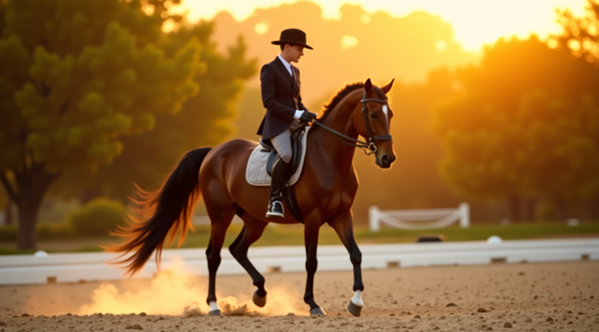
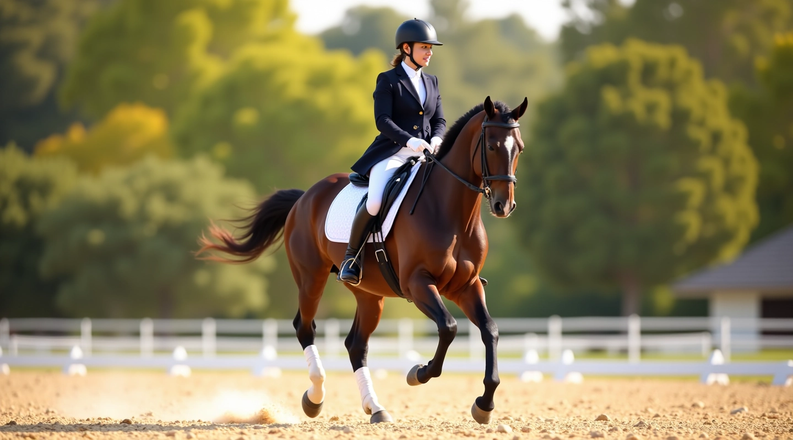
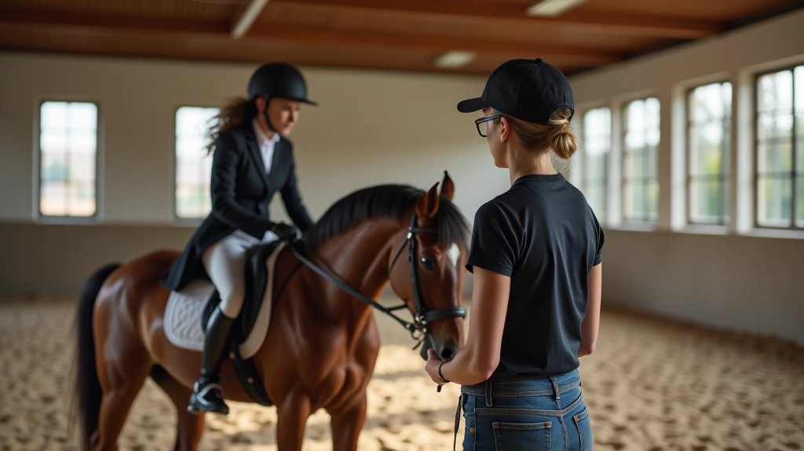
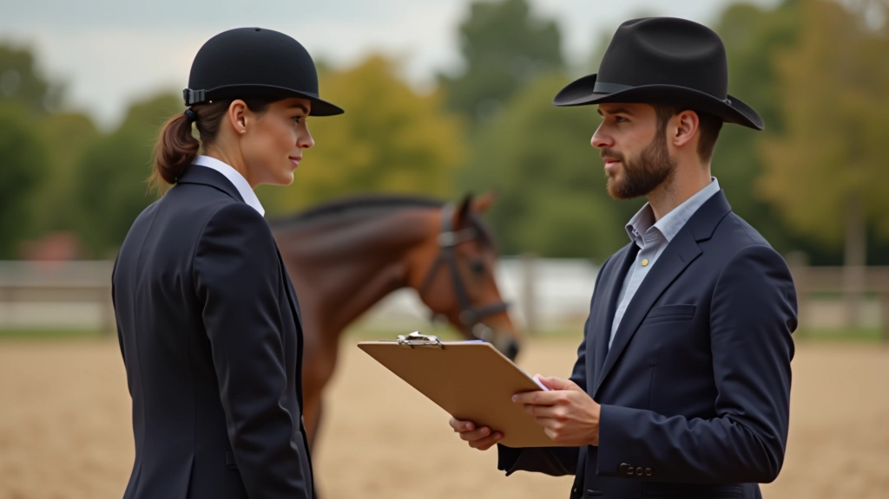
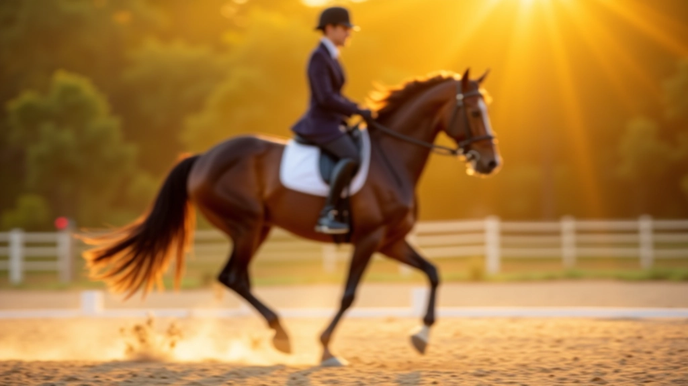
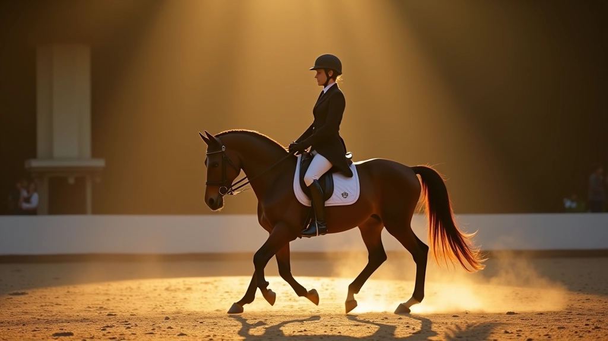
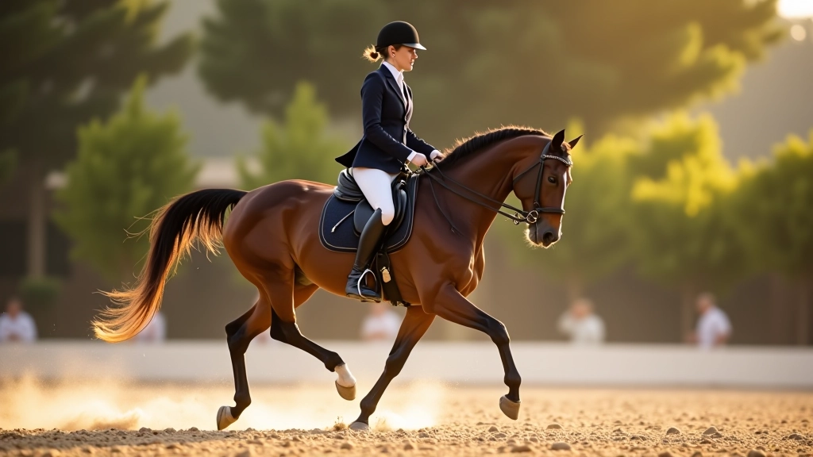

أساسيات انتقال المشي: البداية الصحيحة
يشرح هذا الدليل خطوات البدء الصحيحة لتعليم حصانك انتقالات المشي الأساسية مع التركيز على التحكم والثبات
اقرأ المزيداكتشف تقنيات احترافية لإتقان انتقالات الحصان بين المشي والتوقف مع أفضل المدربين

نحن نركز على الأساسيات القوية والتقنية الدقيقة. مدربونا يعملون معك خطوة بخطوة لضمان فهمك الكامل لكل حركة
مدربون معتمدون بخبرة عملية في الترويض والانتقالات الحركية
خطوات منظمة من المستوى الأساسي إلى المتقدم مع تقييم مستمر
تقدم ملحوظ في الأسابيع الأولى مع تحسن مستمر في الأداء

كل جلسة تدريبية مخصصة احتياجاتك وسرعة تعلمك. لا توجد مجموعات كبيرة أو تعليمات عامة
نسجل كل جلسة ونعرضها عليك مع شرح تفصيلي للأخطاء والتحسينات المطلوبة
تحصل على خطة مفصلة تتابع معك طول فترة التدريب مع ملاحظات دورية
يمكنك التواصل بأسئلة بين الجلسات والحصول على نصائح عملية للتدريب المستقل
كيف بدأنا وكيف تطورنا لنقدم أفضل برامج التدريب
بدأنا برنامجنا الأول في تدريب انتقالات الترويض بهدف نشر المعرفة الحقيقية بين المتدربين
أضفنا أدلة مفصلة حول المشي والتوقف والانتقالات المتقدمة مع فيديوهات شرح عملية
طورنا محتوى متخصص يركز على المشاكل الحقيقية التي يواجهها المتدربون وحلولها العملية
وضعنا برنامج تدريبي متكامل يأخذ المتدرب من المستوى الأساسي إلى المستوى الاحترافي
عندما تبدأ معنا، أنت لا تحصل فقط على جلسات تدريبية . تحصل على نظام متكامل يهدف إلى تحسينك بشكل حقيقي. نحن نركز على التقنية الصحيحة من اليوم الأول لأنه من الأسهل تعلم الطريقة الصحيحة من البداية بدلاً من تصحيح الأخطاء لاحقاً.
ستتعلم كيفية التواصل مع حصانك بطريقة فعالة من خلال الإشارات الدقيقة والتحكم الكامل. كل جلسة مصممة لتعليمك شيئاً جديداً يبني على ما تعلمته سابقاً. ستشعر بالفرق في ثقتك وتوازنك بعد بضعة أسابيع من التدريب المنتظم.
الأهم من ذلك أنك ستفهم السبب خلف كل حركة . لن تكون مجرد تابع للتعليمات، بل ستكون قادراً على تقييم أدائك بنفسك وإجراء التصحيحات اللازمة. هذا يعني أنك تستطيع الاستمرار في التحسن حتى بعد انتهاء الجلسات الرسمية.
استكشف مقالاتنا المفصلة عن تدريب الانتقالات

يشرح هذا الدليل خطوات البدء الصحيحة لتعليم حصانك انتقالات المشي الأساسية مع التركيز على التحكم والثبات
اقرأ المزيد
تقنيات متقدمة لتعليم حصانك التوقف المثالي مع الحفاظ على الانتباه والاستجابة للإشارات الدقيقة
اقرأ المزيد
تعرّف على المشاكل الشائعة التي يواجهها المتدربون وكيفية تصحيحها لتحسين جودة انتقالاتك بسرعة
اقرأ المزيدمنذ عام 2022، كنا ملتزمين بتقديم أفضل محتوى تعليمي عن تدريب الترويض. نحن نركز على الجودة والوضوح والدقة في كل ما ننشره. فريقنا يعمل باستمرار لإضافة محتوى جديد وتحديث الموارد الحالية بناءً على أحدث الممارسات والتطبيقات العملية.
لحظات من جلسات التدريب الفعلية

تمرين الانتقال المتقدم

حركة التوقف المثالية
نعم بالتأكيد. برنامجنا مصمم للمبتدئين تماماً. نبدأ من الأساسيات ونتقدم تدريجياً حسب سرعتك الخاصة. المدربون لديهم خبرة كبيرة في التعامل مع المتدربين من جميع المستويات.
معظم المتدربين يلاحظون تحسناً ملحوظاً بعد 4-6 جلسات. لكن هذا يختلف من شخص لآخر. البعض يتقدم أسرع والبعض يحتاج وقتاً أطول. المهم هو التدريب المنتظم والممارسة.
لا بالضرورة. نحن نوفر أحصنة للتدريب إذا لم يكن لديك واحد. لكن التدريب على حصانك الخاص قد يكون أفضل لأنك ستتعلم التواصل مع شخصيته المحددة.
نركز على الفهم العميق وليس فقط التقليد. نشرح السبب خلف كل حركة ونصحح الأخطاء فوراً. كل جلسة مخصصة احتياجاتك الفردية وليست جلسة جماعية عامة.
يمكن البدء من أعمار مختلفة. البالغون يتعلمون بشكل جيد جداً. الأطفال يحتاجون إلى معدات مناسبة وأحصنة مناسبة. نحن نوفر برامج لجميع الأعمار.
هذا جزء من عملنا. نحن نعمل مع الحصان والفارس معاً. إذا كان هناك مشكلة سلوكية أو تقنية، سنعمل معك على حلها تدريجياً وبصبر.
لا تتردد في التواصل معنا اليوم. نحن هنا للإجابة على جميع أسئلتك وتقديم المشورة المناسبة لحالتك
تواصل معنا الآننستخدم ملفات تعريف الارتباط لتحسين تجربتك على الموقع. بمتابعتك، فأنت توافق على استخدامنا للملفات